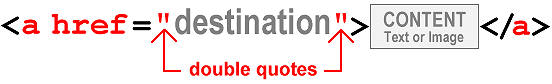
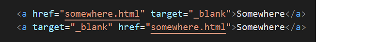
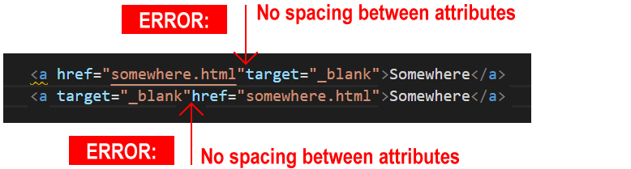
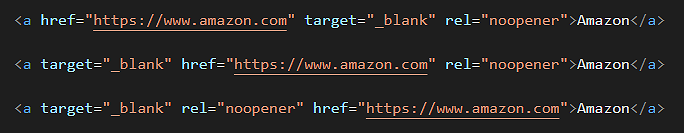

Learning Goals
At the end of this Tutorial you will be able to:
- Recognise the structure of a hyperlink.
- Understand the difference between absolute and relative hyperlinks.
- Add hyperlinks to sample web pages.
You can view finished versions of the two sample web pages to which you will add hyperlinks in this Tutorial by clicking the links below. The finished samples will each open in a new tab of your web browser.
About hyperlinks
Hyperlinks, or more simply links, enable users to click or tap their way from one web page to another web page, and from one website to another website.
In the next Tutorial, Working with Internal Hyperlinks, you will learn how you can also use hyperlinks to go from one section of a web page to another.
The general format of a hyperlink in HTML is as shown below.

Note the following:
- A hyperlink begins with an opening <a> (for ‘anchor’) tag.
- Hyperlinks end with the closing </a> tag.
- Inside the opening <a> tag is the href attribute that is followed by an equal to sign (=).
- The href attribute holds, within quotation marks, the link destination.
This is the location to where the user will be taken when they click or tap on the link.
Hyperlinks typically have the following format:
<p>To learn more, please click <a href="webpage.html">here</a>.</p>
The above HTML tag would produce the following result.

This is an example of a hyperlink placed around an item of text. In this case, the word ‘here’.
Hyperlinks can also be placed around an image, as follows.
<p>Please click on the picture of a cat below.</p>
<a href="webpage.html"><img src="cat.jpg" alt="cat"></a>
This second example would produce the following result.

Hyperlinks: same or different website?
One way of looking at hyperlinks is to ask: what is the destination of the link? Where will it send the user to?
In terms of their destination, you can think of hyperlinks as of two types:
Hyperlinks with absolute URLs
An absolute URL contains the full address of the web page being linked to, and begins with the http:// or https:// protocol.
Absolute URLs will always include the domain (website) name and typically also the name of a particular web page and perhaps too the folder that contains it.

You use absolute URLs when you want to link from one website to a different website – that is, to a website with a different domain name.
Hyperlinks with relative URLs
If you are linking between web pages of the same website, you do not need to include the http:// or https:// protocol or the website domain name.
It is enough to enter only the web page name, such as:
services.html
or
privacy-statement.html
And perhaps also the folder that contains the web page, such as
products/shoes.html
or
services/financial/insurance.html
For example, the relative hyperlink below will take the user to a different page within the same folder of the same website.
<p>Read about our <a href="about-us.html">team members</a>.</p>
You will commonly see relative hyperlinks used in navigation menus that can lead users to the various pages of a website.

Hyperlinks: same or new web browser tab?
You can choose to display a linked-to (‘destination’) web page in the same or in a new tab of your web browser.
Consider the example of a web page named page-1.html that contains a hyperlink to a second web page named page-2.html.
New page, same browser tab
In the first case below, the linked-to web page named page-2.html replaces the current page-1.html web page in the user’s web browser tab.

In the page-1.html web page, the HTML link code would be as follows:
<p>Click to go to <a href="page-2.html">Page 2</a>.</p>
New page, new browser tab
In the second case below, the linked-to page-2.html web page opens in a new tab of the user’s web browser. The original web page is still displayed in the original web browser tab.

In the page-1.html web page, the HTML code for this open in a new tab link would be as follows:
<p>Click to go to <a href="page-2.html" target="_blank">Page 2</a>.</p>
Your hyperlink now has two attributes:
- The href attribute value contains the destination of the hyperlink.
- The target attribute with its value of "_blank" (within double quotes) forces the new page to open in a tab of the user’s web browser.
The order of the two attributes inside the opening tag of a hyperlink does not matter.
For example, both of these hyperlinks are correct.

But ensure you separate the two attributes from each other by a single space. For example, both these hyperlinks are correct. And for the same reason.

Preventing web page hijacking
When you open a hyperlink in a new tab of your web browser, JavaScript code in the new web page is able to take control of the original web page you linked from.
See this article from Google: Links to cross-origin destinations are unsafe.
For this reason, a third attribute of rel with a value of "noopener" is a widely-used security feature that is added to hyperlinks which open in a new tab.
<a href="https://www.website.com" target="_blank" rel="noopener">Other Website</a>
Within the opening <a> hyperlink tag, you can place the three attributes in any order. All three hyperlink examples below are valid.

But, again, always enter a single space between the different attributes.
In the next section of this Tutorial you will add hyperlinks to a web page you created previously.
Preparing your sample web page
In this section, you will work with the sample page-5.html web page and style-5.css stylesheet in your websites folder.
You created this web page and stylesheet in the Introduction to Images Tutorial and updated it in the Working with Google Fonts Tutorial.
- In Visual Studio Code, open the following two files:
page-5.html
style-5.css
- Your first task is to make the web page responsive by using media queries and fluid font sizes.
At the top of the page-5.css stylesheet, replace the current web browser resets by copying-and-pasting the following:
* { margin: 0; padding: 0; border: none }
html { height: 100% }
body { min-height: 100%; max-width: 1600px; margin-left: auto; margin-right: auto }
img { width: 100%; height: auto; display: block }
- Under the web browser resets, replace the current body styles with the following:
body { background-color: #FFFFBD }
@media (min-width: 768px) { body { padding: 4% 20% } }
@media (max-width: 767px) { body { padding: 11% 9% } }
Next, you will update the font sizes of the web page content.
- For the h1 main heading selector, update the font-size property from the fixed value of 84px by copying-and-pasting this fluid value:
font-size: calc(44px + (84 - 44) * ((100vw - 320px) / (1600 - 320)));
- For the h2 sub-heading selector used to style the introduction text, update the font-size property from the fixed value of 26px by copying-and-pasting this fluid value:
font-size: calc(20px + (26 - 20) * ((100vw - 320px) / (1600 - 320)));
- For the h3 sub-heading selector, update the font-size property from the fixed value of 42px by copying-and-pasting this fluid value:
font-size: calc(26px + (42 - 26) * ((100vw - 320px) / (1600 - 320)));
- And for the text paragraphs styled with the p selector, update the font-size property from the fixed value of 22px by copying-and-pasting this fluid value:
font-size: calc(18px + (22 - 18) * ((100vw - 320px) / (1600 - 320)));
- Save the page-5.css stylesheet and view the page-5.html web page in your browser on both desktop/laptop and mobile-sized screens.

Click page-5.html (before hyperlinks added) to view a finished sample of this updated and responsive web page in a new tab of your web browser.
Adding hyperlinks to a sample web page
In this section, you will hyperlinks to your sample page-5.html web page.
- In VS Code, display the page-5.html file.
- Directly under the first image, “Bedroom in Arles” on about line 28, copy-and-paste the following new paragraph and empty hyperlink:
<p><b>On view</b>: <a href="">Vincent van Gogh Museum, Amsterdam</a></p>
- Directly under the second image, “The Yellow House” on about line 34, copy-and-paste the following new paragraph and empty hyperlink:
<p><b>On view</b>: <a href="">Vincent van Gogh Museum, Amsterdam</a></p>
- Directly under the third image, “The Cafe Terrace at Night” on about line 41, copy-and-paste the following new paragraph and empty hyperlink:
<p><b>On view</b>: <a href="">Kröller-Müller Museum, Otterlo</a></p>
- And directly under the fourth and final image, “The Starry Night” on about line 48, copy-and-paste the following new paragraph and empty hyperlink:
<p><b>On view</b>: <a href="">The Museum of Modern Art, New York</a></p>
- Save your web page and view the result in your browser. All four images should now have text with empty hyperlinks under them.

- For each of the four hyperlinks, one after the other, add the following values to their href attribute (inside the pair of double quotes):
https://www.vangoghmuseum.nl/en/collection/s0047V1962
https://www.vangoghmuseum.nl/en/collection/s0032V1962
https://krollermuller.nl/en/vincent-van-gogh-terrace-of-a-cafe-at-night-place-du-forum-1
https://www.moma.org/collection/works/79802
- Save your web page and view the result in your browser. Click the four hyperlinks to ensure they all work correctly.
- Finally, add these two attributes and their values inside each of the four opening hyperlink tags:
target="_blank" rel="noopener"
Ensure you enter a single space between the attributes in your hyperlink opening tags.
- Save your web page and, in your web browser, verify the four hyperlinks all work correctly.
You are now finished working on your first sample web page.
Click page-5.html to view a finished sample of this web page in a new tab of your web browser.
Adding hyperlinks to a second sample page
In this section, you will work with the sample page-10.html web page in your websites folder.
You created this in the Working with Sections Tutorial and updated it in the Introduction to Media Queries and Introduction to Fluid Typography Tutorials.
- In VS Code, open the page-10.html file.
- Directly under the last paragraph in each of the four sections (after the introduction), copy-and-paste the following paragraph that contains a hyperlink:
<p><a href="#">Learn more</a></p>
- Save your web page and, in your web browser, verify that the four sections end with a hyperlink displayed in the default style.
 If you click any of these four links you have added, the web page will simply reload in the browser.
If you click any of these four links you have added, the web page will simply reload in the browser.
You are now finished working on your second sample web page.
Click page-10.html to view a finished sample of this web page in a new tab of your web browser.
Uploading your files to GitHub
Upload the following web pages and stylesheet to your account on GitHub:
page-5.html
style-5.css
page-10.html
Your web pages will be published at web addresses similar to the following:
https://username.github.io/page-5.html
https://username.github.io/page-10.html
It may take a few minutes for your uploaded files to appear on GitHub.